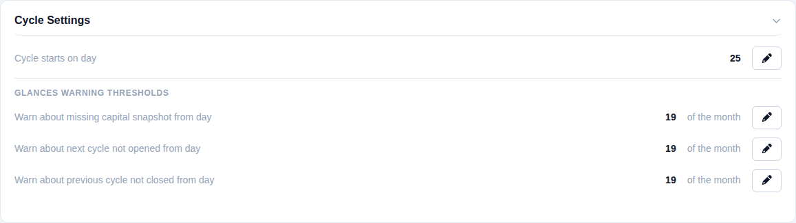
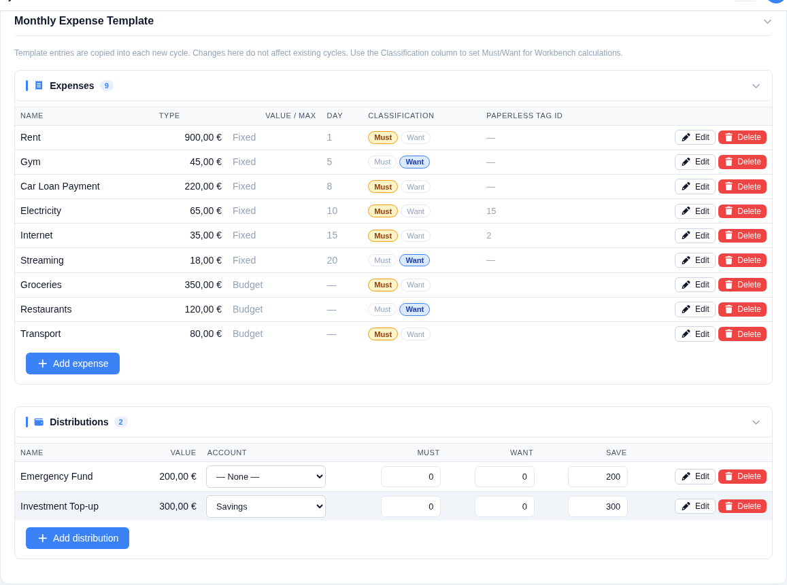
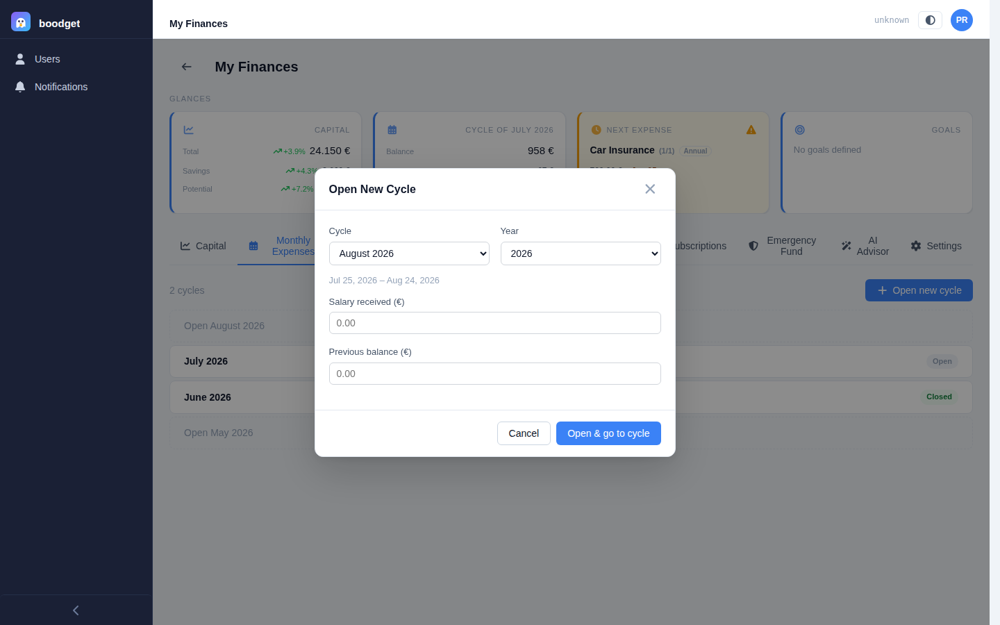
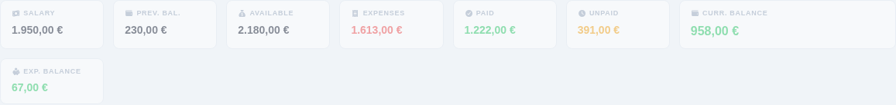
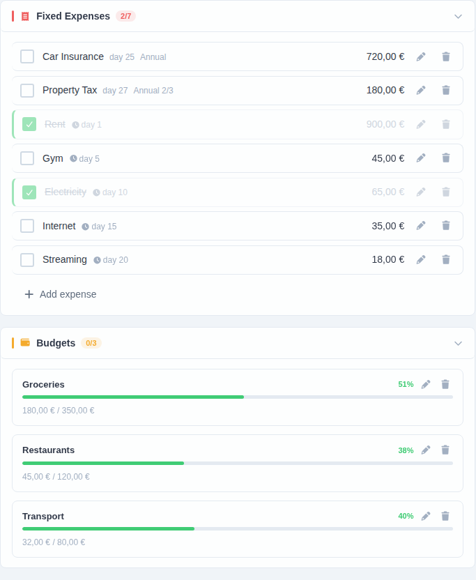
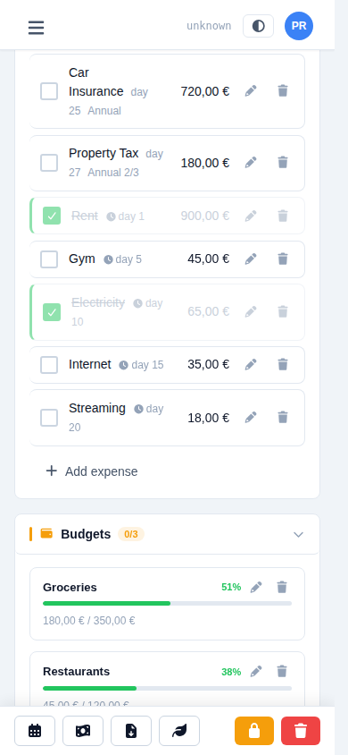
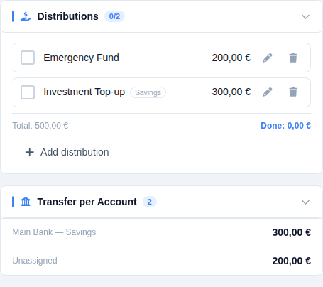
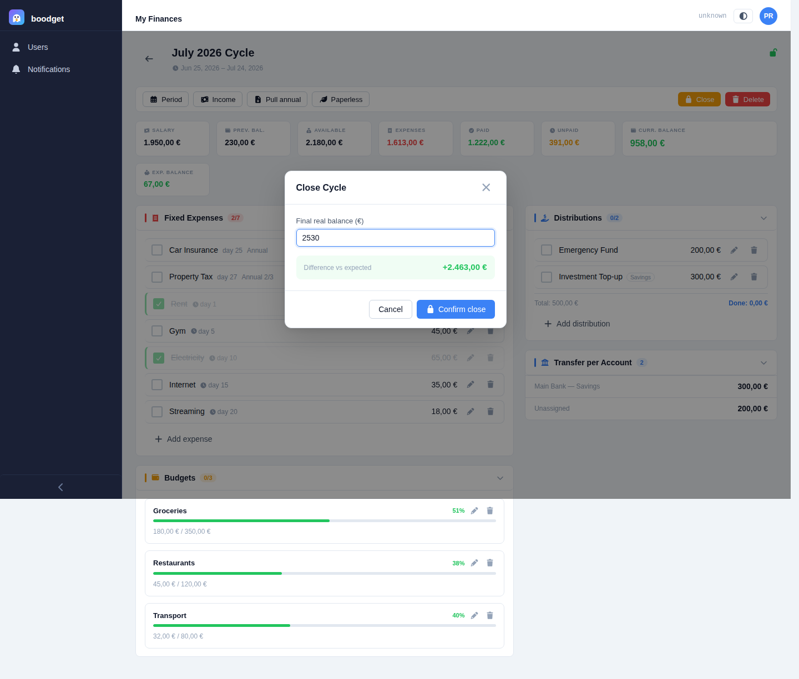

Tracking your Monthly Expenses
The Monthly Expenses section organizes your budget around cycles — the period between salary payments, rather than the calendar month. Set up a reusable template once, then open a cycle each pay period to track what's paid, what's budgeted, and where your money is going. This page walks through setting it up and using it, step by step.
A cycle isn't a calendar month — it runs from the day your salary lands to the day before it lands again. In Settings → Cycle Settings, set the day of the month your salary is received (default: the 25th). A cycle is stored by its start month but always named after the month it ends in — e.g. with a start day of 25, a cycle running Jun 25 – Jul 24 is displayed as "July".
This one setting drives how every cycle, expense day, and installment date is interpreted throughout this section.

The template (also in Settings) is a reusable list copied into every new cycle you open — set it up once and each pay period starts pre-filled. It has two independent lists:
- Expenses — either
Fixed(an exact amount due on a specific day, e.g. rent on the 1st) orBudget(a spending cap you track against during the cycle, e.g. groceries, with no fixed day). Each can carry a Must/Want classification, used by the Workbench. - Distributions — money set aside for a purpose (e.g. "Emergency Fund", "Investment Top-up") rather than spent. Each can optionally link to a funding account — the account that money should come from — so you know at a glance where to transfer it later.
Editing the template never touches cycles you've already opened — changes only apply going forward.

From the Monthly Expenses tab, click Open new cycle and pick the period. You'll enter the salary received and the previous balance (whatever was left over from last cycle — always entered manually, never carried over automatically). Every template item is copied in as a starting point; you can still add ad-hoc items later.
A dossier can have several cycles open at once — there's no requirement to close one before opening the next.

Every cycle's editor opens with a summary strip: salary, previous balance, total available, total expenses (and how much of that is paid vs. unpaid), a running current balance, and the expected balance once everything is settled. Once the cycle is closed, a final real balance and the difference against what was expected are added.

Fixed expenses get a simple checkbox — tick it off once paid. Budget expenses show a progress bar against their maximum as you update the accumulated spent amount; the bar shifts from green to amber to red as you approach the cap. Both lists live in the left column of the cycle editor, sorted by payment day (expenses due later in the current calendar month come first, then next month's, then budgets last).


Distributions live in the right column with their own done/not-done checkbox. If a distribution (or its template) is linked to a funding account, that account's name shows as a small badge on the row. Below the list, a Transfer per Account section totals up how much needs to move into each account this cycle — so you can do the actual bank transfers in one pass instead of hunting through each line item.

When the cycle is over, click Close and enter the final real balance — the actual amount left in your account. boodget compares it against the expected balance and shows the difference immediately, so you catch any discrepancy right away. A closed cycle stays fully editable — closing it is a milestone, not a lock, and it can be reopened at any time.
